내 업무 파일,
AI에게
맡겨 보기
일단 던지고, 내 컴퓨터에 초대하고, 정해진 양식을 주세요.
내 업무 파일을 AI에게 맡기고, 결과를 확인해 고쳐 쓸 수 있다.
inline AI 초대 이벤트
무료초대 코드 K2YERY3H 를 넣으면 1,000 크레딧을 더 받아요.
이 페이지 쓰는 법 — 실습마다 [펼치기 +]를 누르면 순서·파일·프롬프트·정답이 열려요. 프롬프트는 [복사] → 입력창에 Ctrl+V.
로컬이라 좋은 점
inline AI는 웹 채팅이 아니라 내 컴퓨터에 깔려서 파일을 직접 열어요.
큰 파일도 OK. 채팅창 올리기 제한에 덜 걸려요.
계획서·예산표·통신문을 한 번에 읽고 맞춰 봐요.
폴더 하나를 맡겨 50개도 한꺼번에 정리해요.
파일은 내 컴퓨터에 두고 필요한 부분만 읽어요. 그래도 학생 실명·연락처가 든 진짜 파일은 쓰지 마세요.
에이전트 AI라서
묻는 말에 답만 하는 챗봇이 아니에요. 일을 맡기는 AI예요.
시켜 두면 문서를 열고 고치고 저장해요. 그동안 다른 일을 해요.
결과가 폴더에 쌓여서 다음 달엔 그 위에 이어 가요.
학교 양식·규칙·작년 문서가 모이면 그게 AI의 맥락이 돼요.
여섯 단계면 준비 끝
- 1
설치
inline-ai.com → 위쪽 개인용 → Windows용 다운로드 → 받은 파일 두 번 클릭.
막히면: 마우스 오른쪽 관리자 권한으로 실행 · 파란 창은 추가 정보 → 실행 · 와이파이가 느리면 핫스팟.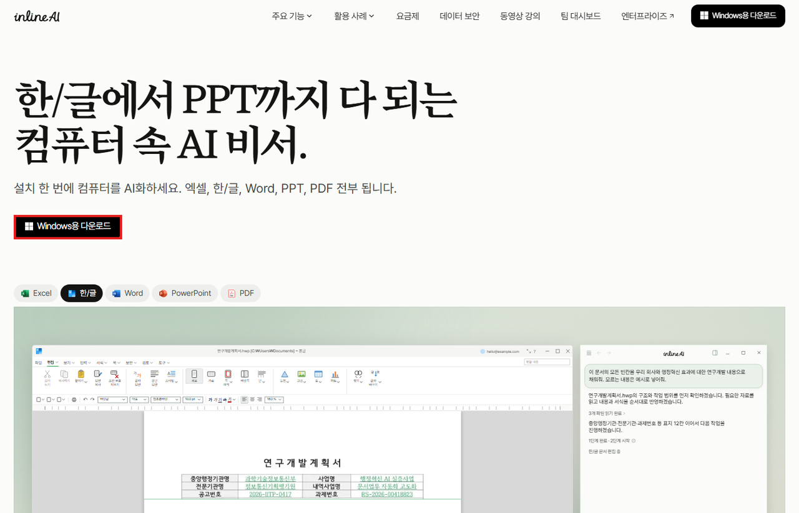
- 2
로그인
inline AI를 켜고 계정을 만들거나 로그인해요. 가운데 입력창이 보이면 성공. 아래 일 버튼(학교 업무 등)은 누르면 바로 실행되니 구경만.

- 3
초대 코드
초대 링크로 들어가거나 앱 위쪽 초대 이벤트에 코드 K2YERY3H. 무료 1,000 크레딧을 더 받아요.
- 4
폴더는 하나만 초대
오른쪽 위 네모(작업 패널) → 접근 가능한 폴더 → 폴더 추가… → 바탕화면 inlineAI_실습 하나만 골라요.
다른 폴더 · 바탕화면 전체 · 다운로드 폴더는 등록하지 마세요. (그림은 강사 PC라 Desktop이 보여요)
- 5
승인 모드는 확인만
입력창 아래가 모든 편집 허용하기로 되어 있는지 확인만 해요. 그대로 둬요. 대신 폴더를 실습 폴더 하나로 막아 두고, 고치기 전에 목록을 먼저 받아요.

- 6
지시사항 붙이기
아래 짧은판을 이 사이트에서 [복사] → 왼쪽 아래 내 이름 → 설정 → 일반 설정 → inline AI 지시사항에 Ctrl+V. 모든 대화에 적용돼요.
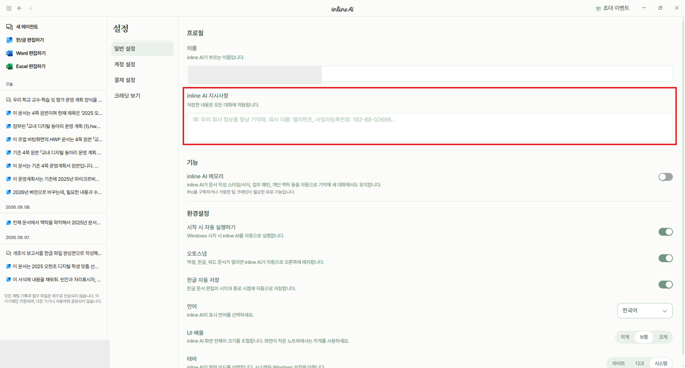
📋 복사 버튼
프롬프트는 이 사이트에서 복사해요
실습마다 [펼치기] → 프롬프트 저장소의 [복사] → inline AI 입력창에 Ctrl+V. 한 페이지로 모아 둔 프롬프트 모음도 있어요.

📋 복사해서 쓰기
지시사항 — 기본 지침 짧은판
복사해서 설정 → 일반 설정 → inline AI 지시사항에 한 번만 붙여 넣어요. 연수가 끝나면 지워도 돼요.
안전장치 세 가지
승인 모드는 '모든 편집 허용하기' 그대로. 대신 이 세 가지로 지켜요.
접근 가능한 폴더는 inlineAI_실습 하나. 그 밖은 AI가 못 봐요.
프롬프트마다 '새 이름으로 저장'이 들어 있어요.
'고치기 전에 목록으로 먼저 보여 줘. 아직 고치지 마.'
오늘의 약속: 실습이 바뀌면 새 에이전트 · 한글 파일은 하나만 열기 · 엑셀은 MS 엑셀 · 모델은 자동 그대로
🧭 업무 지침
00_업무지침 — AI의 업무 매뉴얼
AI가 일하기 전에 먼저 읽는 업무 매뉴얼이에요. inlineAI_실습 안에 들어 있어서 폴더를 초대하면 같이 들어가요. 우리 학교에 쓸 땐 04 학교기본정보만 고치면 돼요.
지시사항에 붙여 매번 같은 규칙으로
중요한 문서 때 첫 메시지에 같이 → 계획 먼저·검수까지
날짜·시간·금액 형식이 틀리는 오류를 막아요
학급 수·부서·담당자를 지어내는 오류를 막아요
2026년 요일 실수를 막아요
기안문·통신문의 순서 빠뜨림을 막아요
다 쓴 뒤 스스로 점검하게 해요
쓰는 법은 한 줄: "00_업무지침 폴더의 규칙을 따라서, 열려 있는 계획서로 기안문 본문을 써 줘."
이것만 기억해요
폴더를 통째로 맡기고, 옮기기 전에 표부터 받아요.
파일은 열지 않고 폴더 첨부하기로 다운로드_흉내만 붙여요.
'원래 이름 → 옮길 폴더' 표를 보고 좋으면 그때 옮겨요.
어느 게 최신인지는 AI도 이름만 보고 추측해요.
이 순서로 해요
- 1
폴더 붙이기
새 에이전트 → 입력창 + → 폴더 첨부하기 → 다운로드_흉내를 골라요.
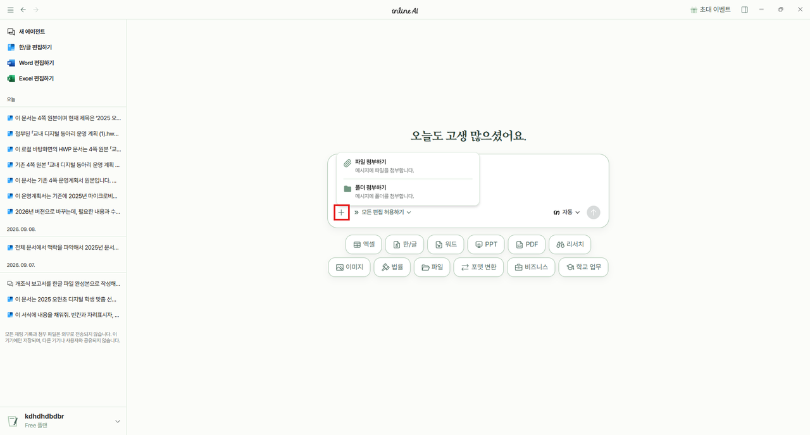
- 2
프롬프트 붙여 넣기
아래 프롬프트 저장소에서 ★ 필수 하나만 [복사] → 입력창에 Ctrl+V → 보내기.
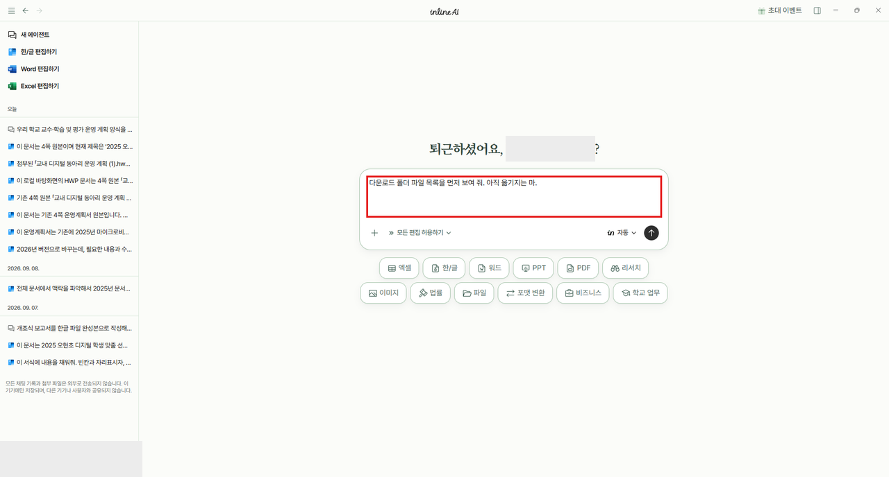
- 3
결과 확인
'원래 이름 → 옮길 폴더' 표가 먼저 나와요. 캡처본_확인필요.hwpx가 한글 쪽으로 갔는지 봐요.
- 4
새 이름으로 저장
표가 맞으면 '좋아, 옮겨 줘'. 탐색기에서 01_공문~99_확인필요 폴더가 생겼는지 확인해요.
📂 내려받기
실습 파일
한 파일씩 받아도 되고, 이 실습 폴더만 zip으로 받아도 돼요. 바탕화면 inlineAI_실습 폴더 안에 풀어 주세요.
실습 폴더
다운로드_흉내 (파일 77개 · 대부분 0바이트 흉내 파일)
파일 미리보기
눌러서 크게 볼 수 있어요.
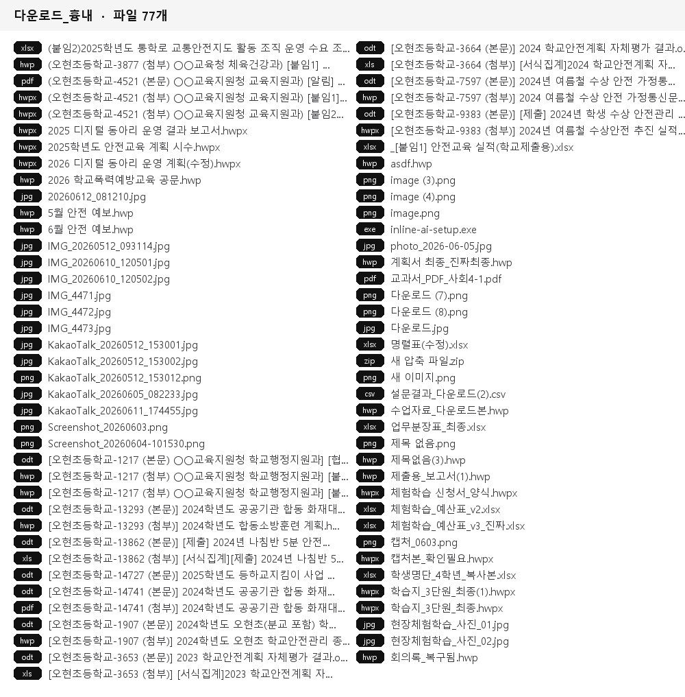

📋 복사해서 쓰기
프롬프트 저장소 · 10개
프롬프트는 여기서 [복사] → inline AI 입력창에 Ctrl+V → 보내기. 실습이 바뀌면 새 에이전트로 시작해요.
※ ★ 필수 하나만 하면 돼요. 아래 '더 해보기'는 시간 남을 때 골라서.
준비새 에이전트 → 입력창 + → 폴더 첨부하기 → '다운로드_흉내' (파일은 안 열어도 됨)
더 해보기 (선택) · 9개 — 시간 남으면 펼치기
추가 실습: 실제 안전 업무 문서
'다운로드_흉내' 폴더에 실제 학교 안전 업무 인수인계 폴더의 파일 이름을 본뜬 파일 25개가 더 들어 있어요. (학교 이름만 오현초로 바꿨고, 내용은 0바이트 빈 파일)
추가 실습: 사진 정리 → 통합 사진 → 뮤직비디오 배경 영상
준비'다운로드_흉내' 폴더 안의 사진 22장 (IMG_4471.jpg, 다운로드 (7).png, 제목 없음.png 처럼 이름만 봐선 뭔지 모르는 사진들)
(※ 영상 만들기는 inline AI에서 안 될 수도 있어요 [리허설 확인]. 안 되면 마지막 시간의 클로드 코워크로 해 보세요.)
사진 출처: 꿀벌 캐릭터·랜드마크·무늬 = 다문화 보드(강사 제작) / 분리수거 = TrashNet(Stanford, MIT License)
인터넷이 안 될 때만: 실습 자료의 00_프롬프트_전체.txt에 같은 내용이 있어요.
✅ 정답
정답 미리보기
AI 결과와 나란히 놓고 비교해 보세요. 정답 파일도 받을 수 있어요.
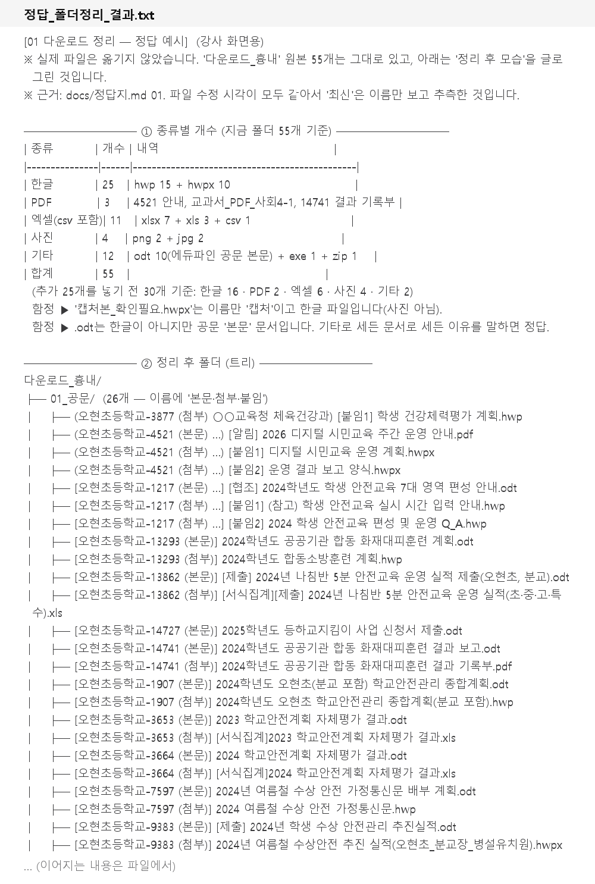
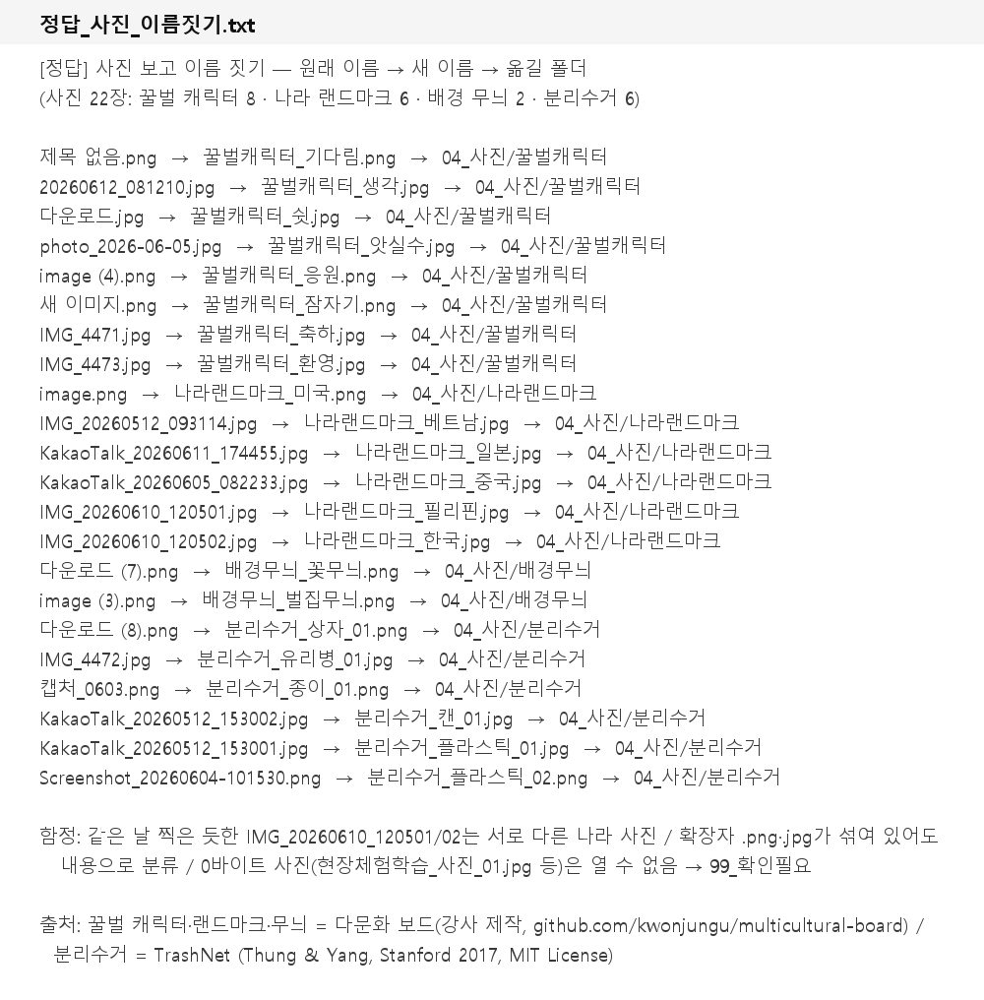
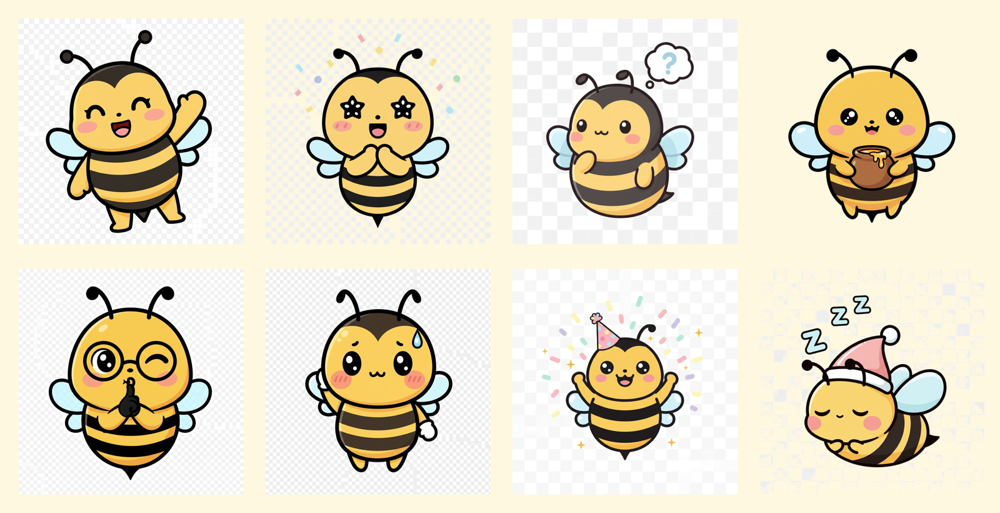
이런 곳을 봐요 — 함정
캡처본_확인필요.hwpx는 이름에 '캡처'가 있지만 한글 파일이에요.
한글 25 · PDF 3 · 엑셀 11 · 사진 4 · 기타 12 (odt 10개는 공문 본문)
파일 시각이 모두 같아요. AI가 '확실하지 않다'고 말하면 정답이에요.
0바이트 사진은 열 수 없어요 → 99_확인필요. 비슷한 이름도 서로 다른 나라 사진이에요.
이것만 기억해요
열린 양식은 그대로 두고 내용만 바꿔 달라고 해요.
머리 표·제목 상자·현황 표·학교장 자리는 그대로 둬요.
원본은 두고 가정통신문_디지털시민교육.hwpx로 저장해요.
메모에 없는 내용은 지어내지 말고 [확인 필요]로.
이 순서로 해요
- 1
양식 열고 메모 붙이기
오현교육통신_양식을 한글로 열고 한/글 편집하기. 보낼내용_메모.hwpx는 채팅창에 끌어다 놓아요.
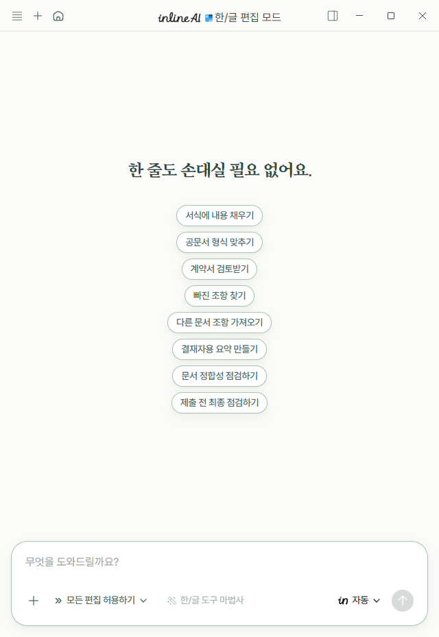
- 2
프롬프트 붙여 넣기
아래 프롬프트 저장소에서 ★ 필수 하나만 [복사] → 입력창에 Ctrl+V → 보내기.
- 3
결과 확인
AI가 먼저 계획을 보여 줘요. 공사 이야기가 빠졌는지, 날짜가 바뀌었는지 읽고 이어서 작업하기.
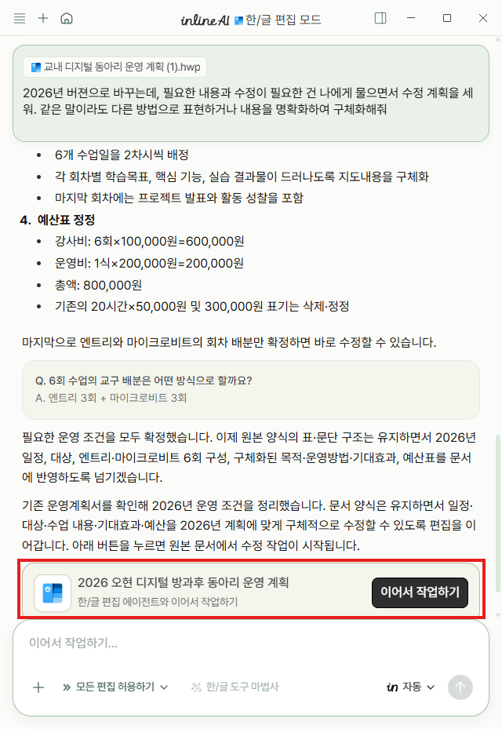
- 4
새 이름으로 저장
같은 폴더에 새 파일이 생겼는지, 원본 양식은 그대로인지 확인해요.
📂 내려받기
실습 파일
한 파일씩 받아도 되고, 이 실습 폴더만 zip으로 받아도 돼요. 바탕화면 inlineAI_실습 폴더 안에 풀어 주세요.
파일 미리보기
눌러서 크게 볼 수 있어요.
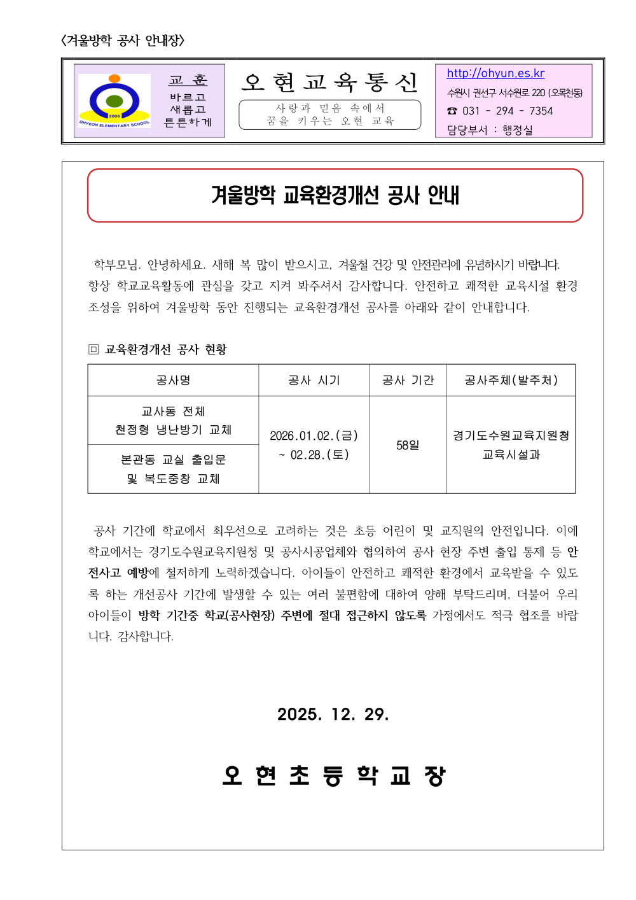
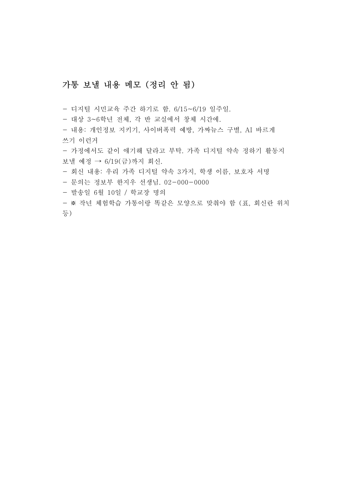
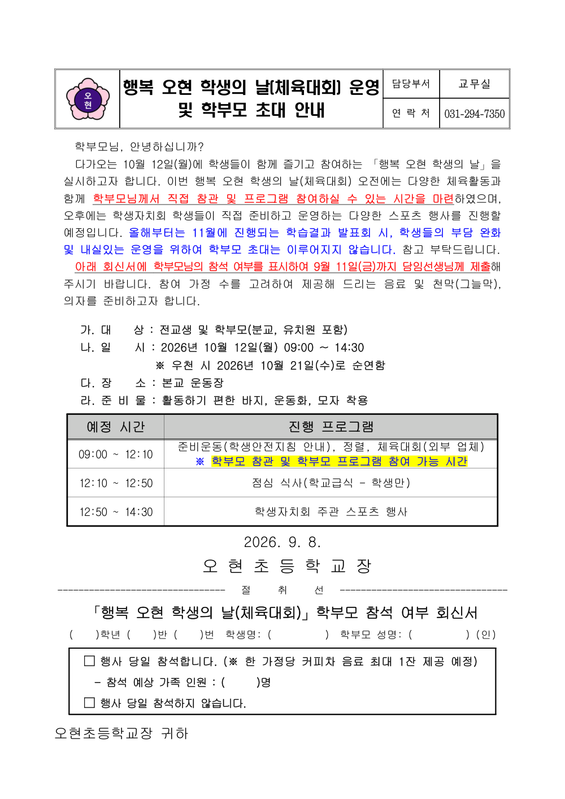
📋 복사해서 쓰기
프롬프트 저장소 · 9개
프롬프트는 여기서 [복사] → inline AI 입력창에 Ctrl+V → 보내기. 실습이 바뀌면 새 에이전트로 시작해요.
※ ★ 필수 하나만 하면 돼요. 아래 '더 해보기'는 시간 남을 때 골라서.
준비'오현교육통신_양식(2025 겨울방학 공사 안내).hwpx' 열기 (오현초 실제 가정통신문, 1쪽) + '보낼내용_메모.hwpx'를 채팅창에 끌어다 놓기
더 해보기 (선택) · 8개 — 시간 남으면 펼치기
추가 실습: 실제 안전 업무 문서
준비'추가양식_2026 행복 오현 학생의 날 가정통신문.hwpx' 열기 (실제 학교 가정통신문을 학교 이름만 바꾼 것)
추가 실습: 양식 그대로 번역하기 — 다문화 가정 안내
준비'추가양식_2026 행복 오현 학생의 날 가정통신문.hwpx' 열기 (1쪽짜리 짧은 문서)
※ 번역본은 보내기 전에 꼭 원어민 학부모나 통역 지원 선생님께 한 번 보여 주세요.
인터넷이 안 될 때만: 실습 자료의 00_프롬프트_전체.txt에 같은 내용이 있어요.
✅ 정답
정답 미리보기
AI 결과와 나란히 놓고 비교해 보세요. 정답 파일도 받을 수 있어요.
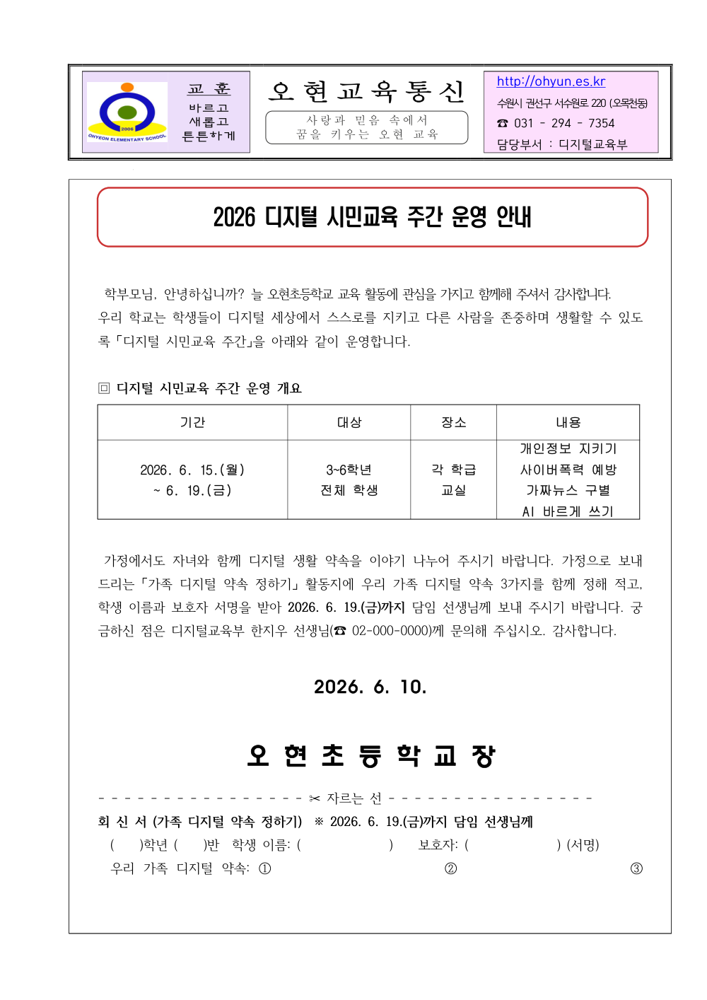
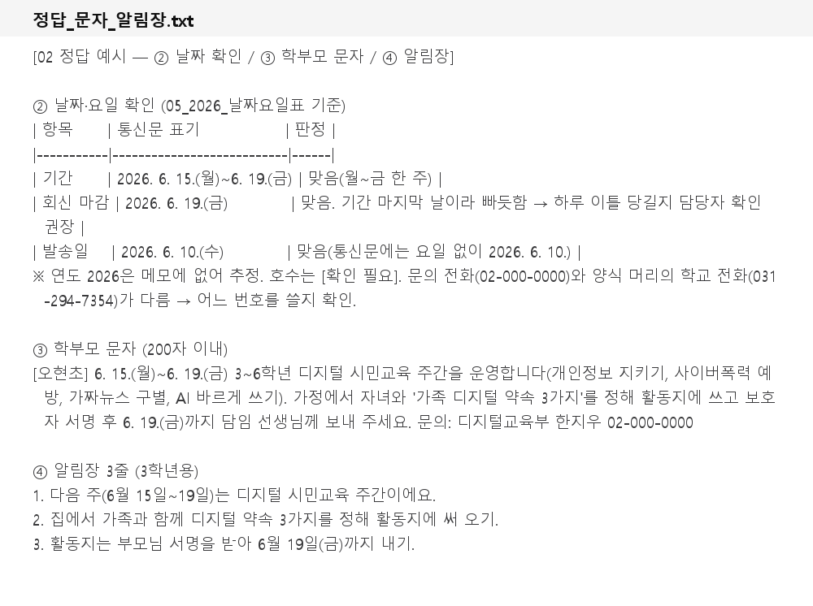
이런 곳을 봐요 — 함정
맨 위 〈겨울방학 공사 안내장〉 라벨, 공사 표·공사 당부가 남아 있으면 오답이에요.
날짜 2025. 12. 29., '새해 복 많이' 인사가 6월 통신문에 남으면 오답이에요.
양식은 행정실, 메모는 정보부. AI가 묻거나 [확인 필요]로 두면 좋아요.
6. 15.(월)~6. 19.(금), 회신 6. 19.(금) 모두 맞아요. 학생의 날 문서는 틀린 곳이 없어요 — 오류를 지어내지 않는지 봐요.
이것만 기억해요
표의 칸 이름과 정렬 기준을 같이 말해요.
'담당 | 맡은 일 | 마감일 | 비고'처럼 칸을 정해 줘요.
마감 빠른 순처럼 순서 기준을 줘요.
비워 두지 말고 '미제출'처럼 채우라고 해요.
이 순서로 해요
- 1
파일 열기
새 에이전트로 시작하고 표로_만들_자료.hwpx를 한글로 열어요.
- 2
프롬프트 붙여 넣기
아래 프롬프트 저장소에서 ★ 필수 하나만 [복사] → 입력창에 Ctrl+V → 보내기.
- 3
결과 확인
한글 창에 표가 들어와요. 맨 위가 6/3 4반 담임, 맨 아래가 6/10 3반 담임인지 봐요.
- 4
새 이름으로 저장
다른 이름으로 저장해 원본을 남겨요.
📂 내려받기
실습 파일
한 파일씩 받아도 되고, 이 실습 폴더만 zip으로 받아도 돼요. 바탕화면 inlineAI_실습 폴더 안에 풀어 주세요.
파일 미리보기
눌러서 크게 볼 수 있어요.
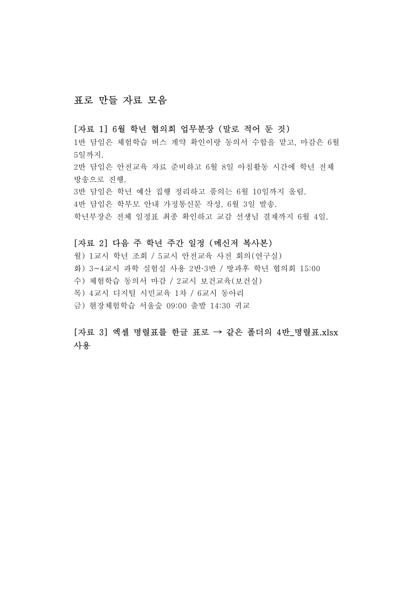
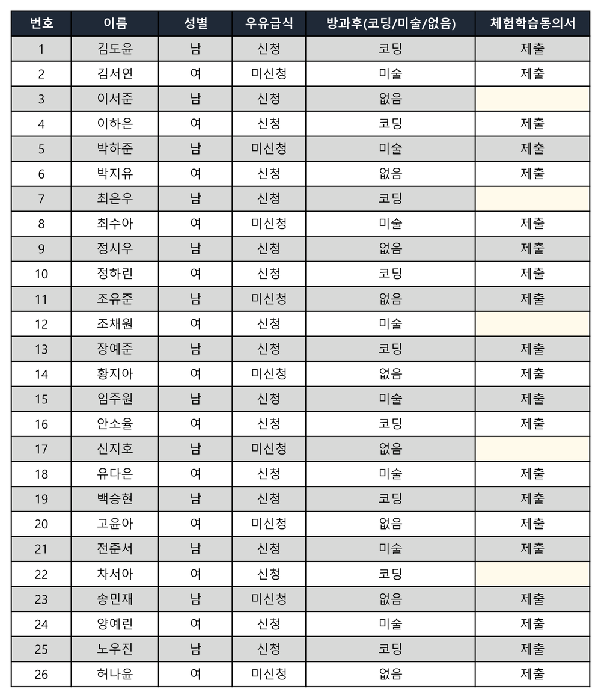
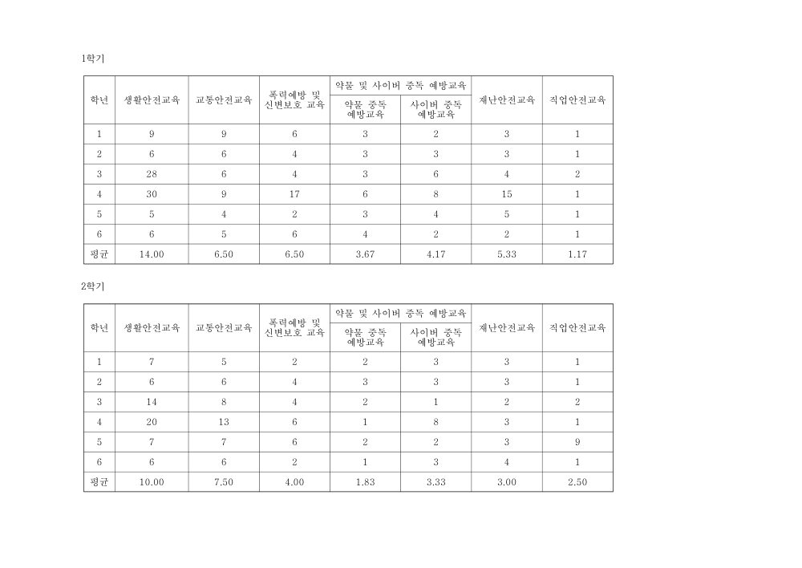
📋 복사해서 쓰기
프롬프트 저장소 · 6개
프롬프트는 여기서 [복사] → inline AI 입력창에 Ctrl+V → 보내기. 실습이 바뀌면 새 에이전트로 시작해요.
※ ★ 필수 하나만 하면 돼요. 아래 '더 해보기'는 시간 남을 때 골라서.
준비'표로_만들_자료.hwpx' 열기
더 해보기 (선택) · 5개 — 시간 남으면 펼치기
[자료 1] 학년 업무분장을 '담당 | 맡은 일 | 마감일 | 비고' 표로 바꿔 줘. 마감일이 빠른 순서로 정리해 줘.
추가 실습: 실제 안전 업무 문서
준비'추가_2025학년도 안전교육 계획 시수.hwpx' 열기 (실제 학교의 학년별·영역별 안전교육 시수표)
인터넷이 안 될 때만: 실습 자료의 00_프롬프트_전체.txt에 같은 내용이 있어요.
✅ 정답
정답 미리보기
AI 결과와 나란히 놓고 비교해 보세요. 정답 파일도 받을 수 있어요.
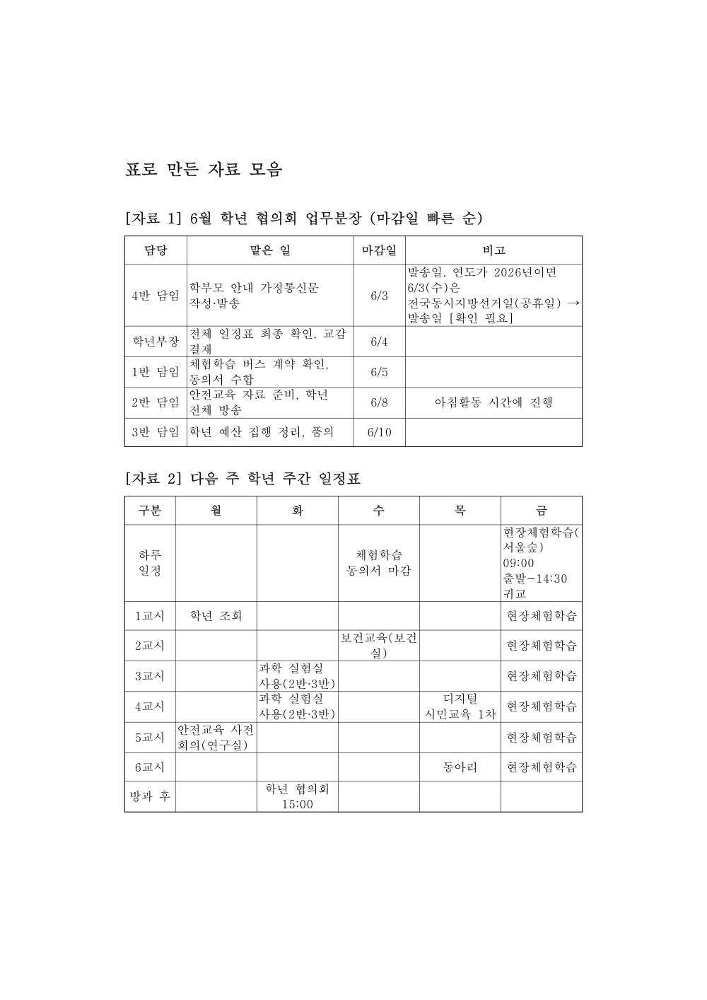
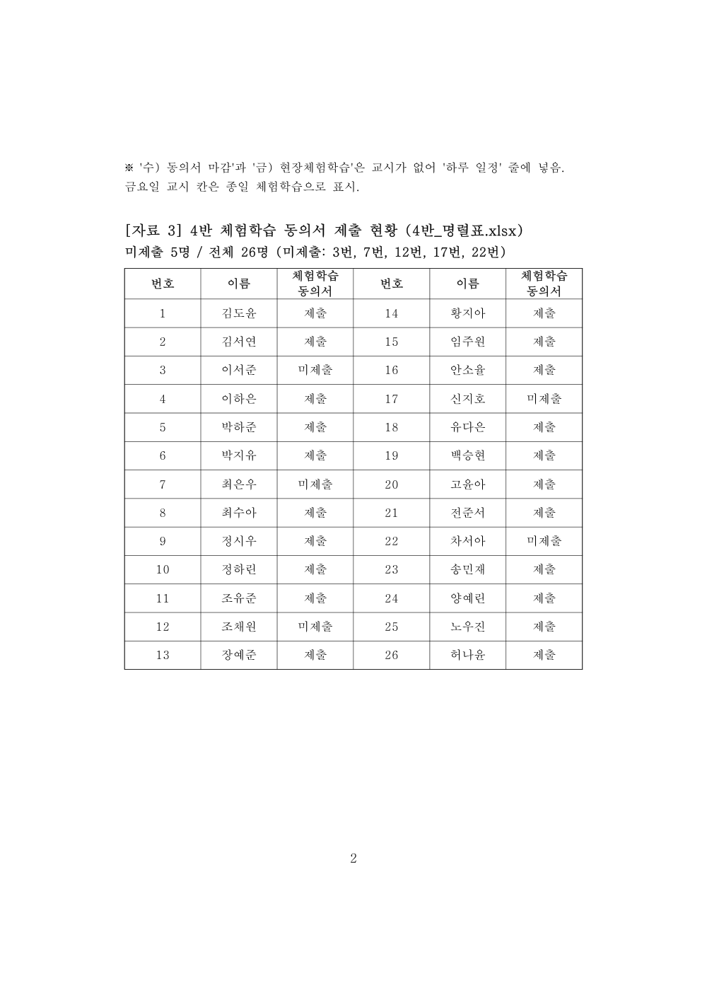
이런 곳을 봐요 — 함정
마감 빠른 순: 6/3 4반 → 6/4 학년부장 → 6/5 1반 → 6/8 2반 → 6/10 3반
수요일 '동의서 마감', 금요일 '현장체험학습'은 교시가 없어요. 어디에 넣는지 봐요.
미제출 5명 / 전체 26명 (3·7·12·17·22번)
연간 합계 455시간. 원본 '계' 칸은 계산식이라 AI가 못 읽을 수 있어요.
이것만 기억해요
메모대로만 고치고, 새 이름으로 저장해요.
AI가 바꿀 곳을 먼저 보여 줘요(지시사항 1번). 읽고 이어서.
메모에 없는 숫자는 [확인 필요]로 남겨요.
'항목 | 작년 | 올해' 표로 교감 선생님 보고까지.
이 순서로 해요
- 1
파일 열고 메모 붙이기
2025년 … 신청서(작년).hwpx를 한글로 열고, 2026_디지털튜터_변경사항_메모를 첨부해요.
- 2
프롬프트 붙여 넣기
아래 프롬프트 저장소에서 ★ 필수 하나만 [복사] → 입력창에 Ctrl+V → 보내기.
- 3
결과 확인
바꿀 곳 계획이 먼저 나와요. 학생 수 715 → 711, 교원 수 [확인 필요]인지 봐요.
- 4
새 이름으로 저장
2026년 … 신청서.hwpx 새 파일이 생겼는지, '(작년)' 원본은 그대로인지 확인해요.
📂 내려받기
실습 파일
한 파일씩 받아도 되고, 이 실습 폴더만 zip으로 받아도 돼요. 바탕화면 inlineAI_실습 폴더 안에 풀어 주세요.
파일 미리보기
눌러서 크게 볼 수 있어요.
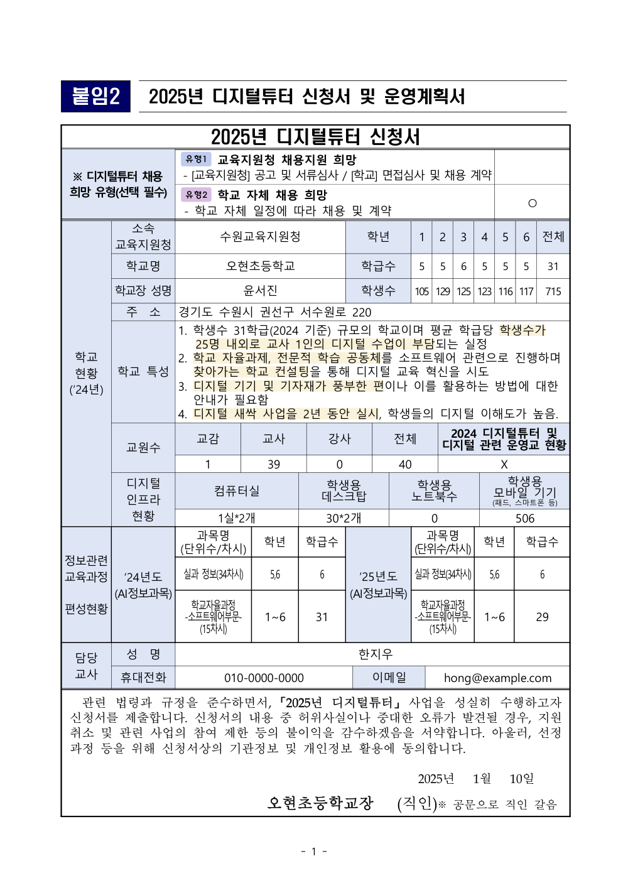
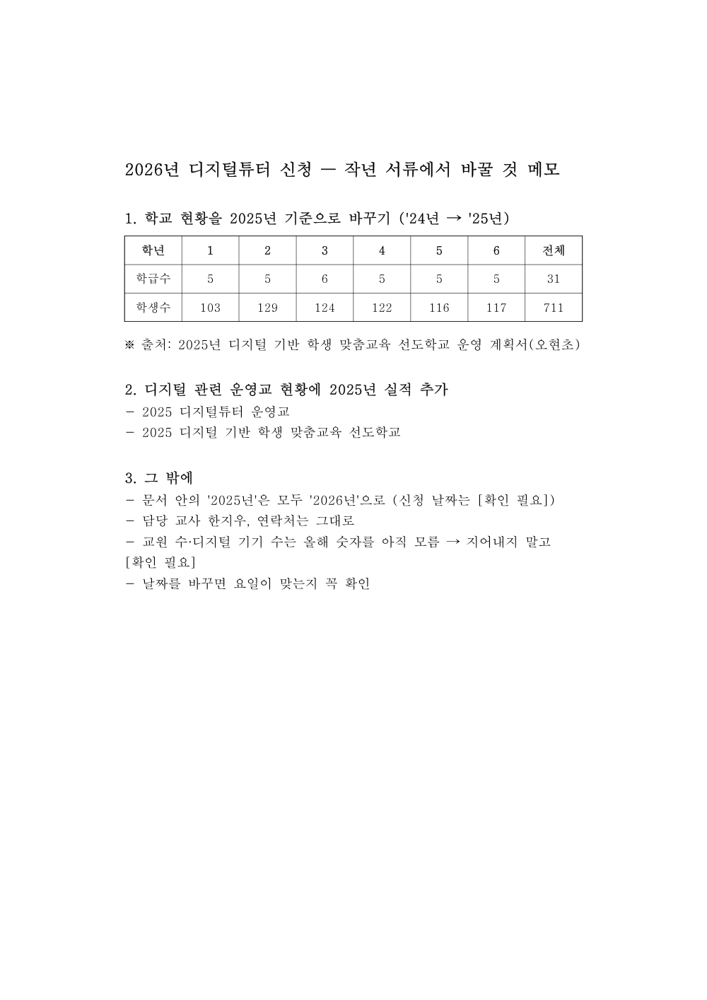

📋 복사해서 쓰기
프롬프트 저장소 · 6개
프롬프트는 여기서 [복사] → inline AI 입력창에 Ctrl+V → 보내기. 실습이 바뀌면 새 에이전트로 시작해요.
※ ★ 필수 하나만 하면 돼요. 아래 '더 해보기'는 시간 남을 때 골라서.
준비'2025년 오현초 디지털튜터 신청서 및 운영계획서(작년).hwpx' 열기 + '2026_디지털튜터_변경사항_메모.hwpx' 첨부
더 해보기 (선택) · 5개 — 시간 남으면 펼치기
추가 실습: 실제 안전 업무 문서
준비'추가_실수예시_2025학년도 합동소방훈련 계획(앞부분).hwpx' 열기 (실제 학교에서 결재까지 끝난 2025 확정본의 앞부분)
인터넷이 안 될 때만: 실습 자료의 00_프롬프트_전체.txt에 같은 내용이 있어요.
✅ 정답
정답 미리보기
AI 결과와 나란히 놓고 비교해 보세요. 정답 파일도 받을 수 있어요.
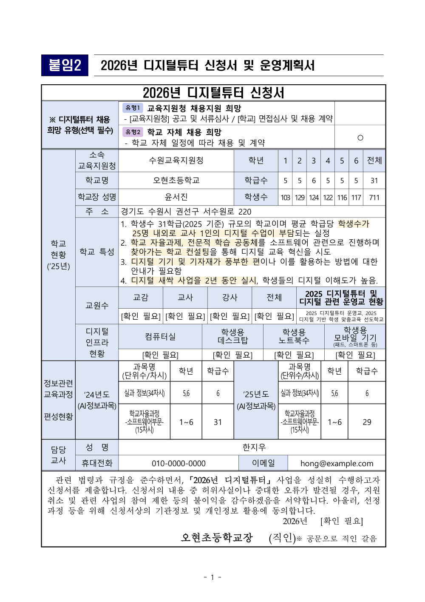
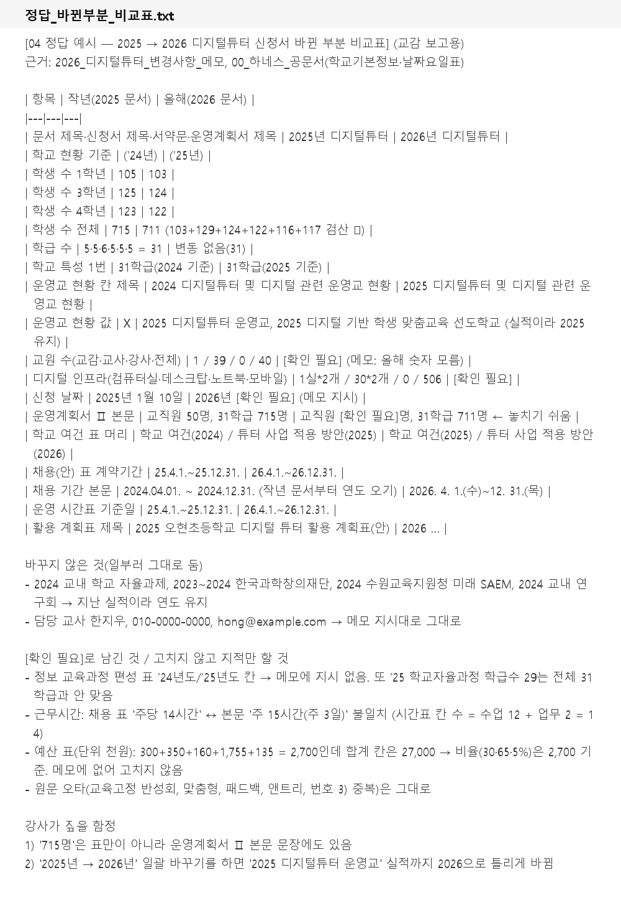
이런 곳을 봐요 — 함정
715 → 711명. 바뀌는 건 1·3·4학년뿐, 본문의 '715명'도 같이 바뀌어야 해요.
2025 실적은 2025 그대로예요. '2025 → 2026' 일괄 바꾸기는 오답.
교원 수·기기 수·신청 날짜는 메모에 없어요 → [확인 필요].
예산 합계 칸 27,000 ↔ 항목 합 2,700(천원). 고치지 말고 지적만. 소방훈련은 '2024년도' 한 곳만 고쳐요.
이것만 기억해요
계산은 식으로, 못 맞추면 못 맞춘다고.
금액 칸을 단가×수량 식, 합계는 SUM 식으로.
조건 안에서 안 되면 얼마가 모자라는지 말하게 해요.
1,500원 × 98개 = 147,000원 같은 품의 문장으로.
이 순서로 해요
- 1
엑셀 열기
체험학습_예산표.xlsx를 MS 엑셀로 열고 inline AI를 옆에 둬요. (한셀은 안 돼요)

- 2
프롬프트 붙여 넣기
아래 프롬프트 저장소에서 ★ 필수 하나만 [복사] → 입력창에 Ctrl+V → 보내기.
- 3
결과 확인
다른 줄 두 곳(보험·물티슈)을 찾았는지, 차이 금액이 맞는지 봐요.
- 4
새 이름으로 저장
고친 금액 칸에 =단가*수량 식이 보이는지 확인하고 새 이름으로 저장해요.
📂 내려받기
실습 파일
한 파일씩 받아도 되고, 이 실습 폴더만 zip으로 받아도 돼요. 바탕화면 inlineAI_실습 폴더 안에 풀어 주세요.
실습 파일
체험학습_예산표
실습 파일
학급운영비_0원맞추기
실습 파일
성립전 예산요구서 서식
실습 파일
탐구수학 운영비 집행계획
실습 파일
2022 교구 견적서
추가 실습
추가 · 전세버스 견적서
파일 미리보기
눌러서 크게 볼 수 있어요.
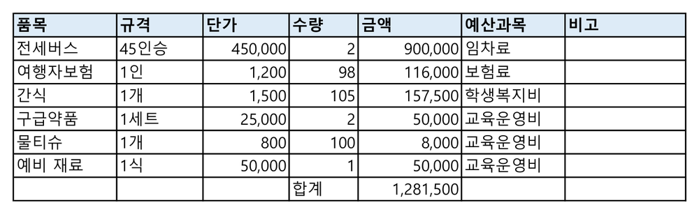
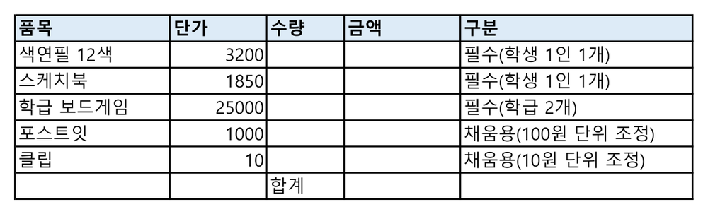
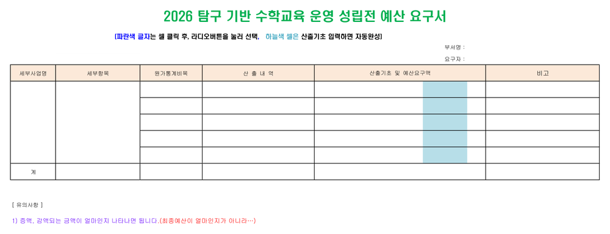
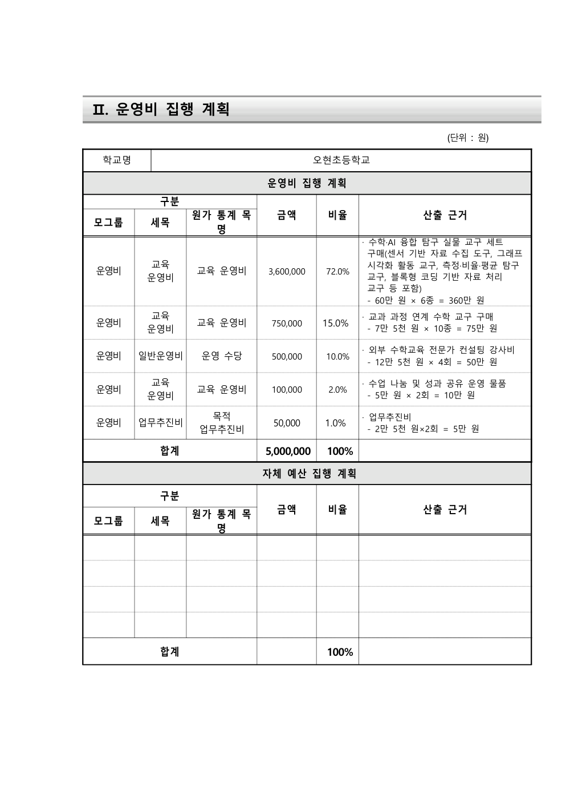
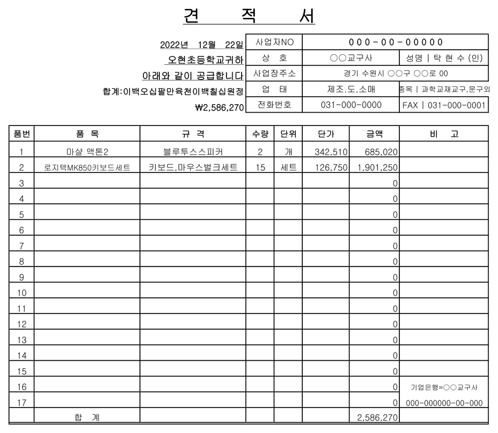
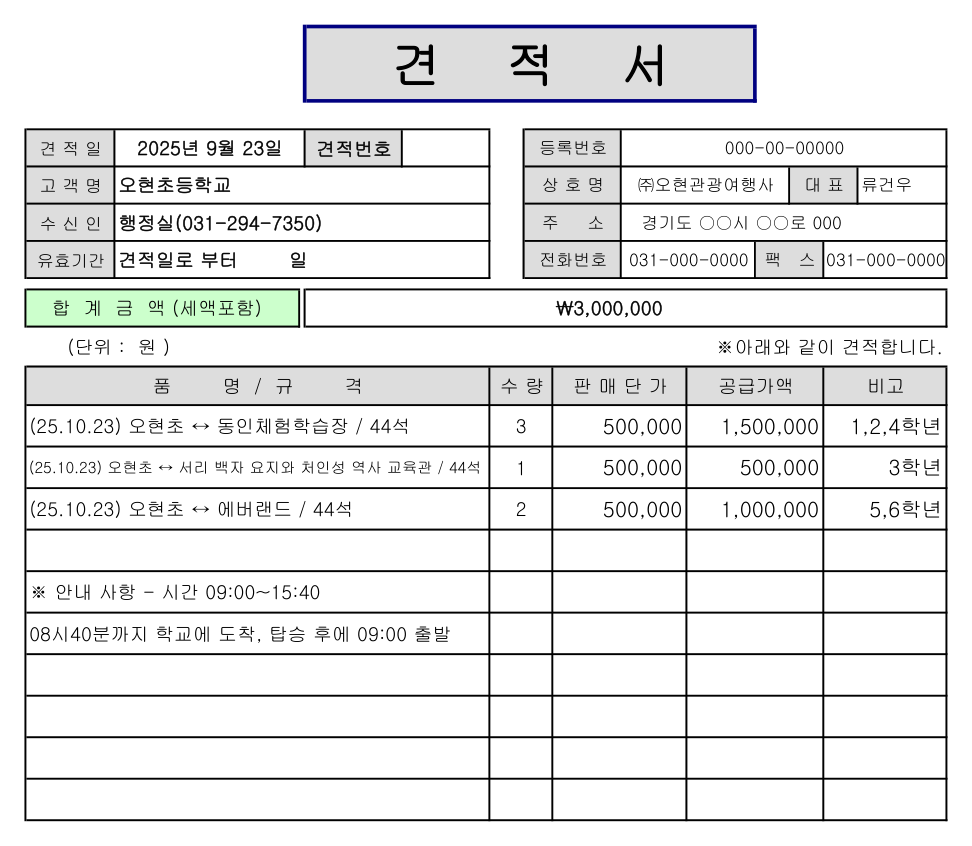
📋 복사해서 쓰기
프롬프트 저장소 · 8개
프롬프트는 여기서 [복사] → inline AI 입력창에 Ctrl+V → 보내기. 실습이 바뀌면 새 에이전트로 시작해요.
※ ★ 필수 하나만 하면 돼요. 아래 '더 해보기'는 시간 남을 때 골라서.
준비엑셀은 꼭 MS 엑셀로 열기 (한셀은 안 됨)
준비체험학습_예산표.xlsx 열고
더 해보기 (선택) · 7개 — 시간 남으면 펼치기
추가 실습: 실제 안전 업무 문서
준비'추가_2025 오현초 체험학습 전세버스 견적서(25.10.23).xlsx' 열고 — 실제 체험학습 버스 견적서를 업체·학교 정보만 바꾼 것
인터넷이 안 될 때만: 실습 자료의 00_프롬프트_전체.txt에 같은 내용이 있어요.
✅ 정답
정답 미리보기
AI 결과와 나란히 놓고 비교해 보세요. 정답 파일도 받을 수 있어요.
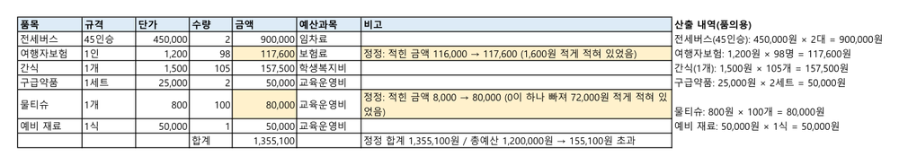
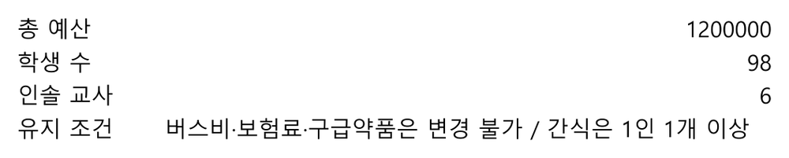
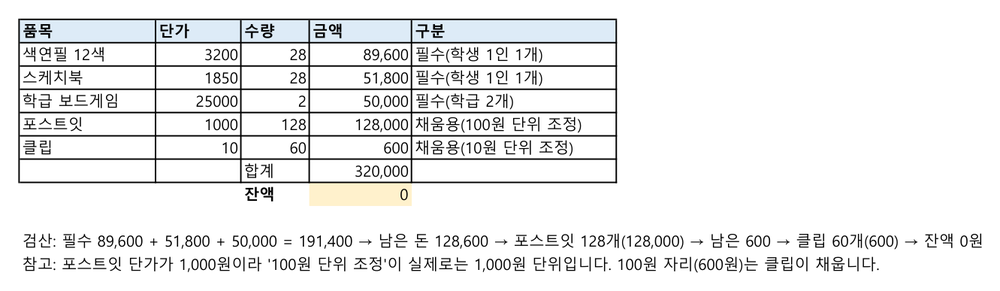
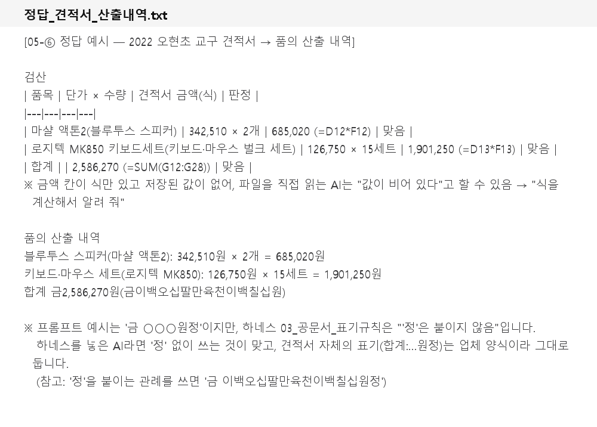
이런 곳을 봐요 — 함정
보험 1,600원, 물티슈 72,000원 적게 적힘 → 정정 합계 1,355,100원
조건을 지키면 최소 14,600원 부족. 억지로 맞추면 오답이에요.
포스트잇 128개 · 클립 60개 → 잔액 0원
교구 2,586,270원(금 이백오십팔만육천이백칠십원정). 버스는 행선지 3곳, 6대, 3,000,000원.
이것만 기억해요
형식은 예시 그대로, 날짜는 내 눈으로.
계획서에 2024. 4. 18.이 숨어 있어요. AI가 짚는지 봐요.
제목 / 1. 관련 / 2. 가~마 / 붙임 / 끝.
관련 공문·세부 예산은 지어내지 말고 [확인 필요].
이 순서로 해요
- 1
파일 열고 예시 붙이기
2025학년도 오현 AI 과학의 날 운영계획을 열고 기안문_본문_예시.hwpx를 첨부해요.
- 2
프롬프트 붙여 넣기
아래 프롬프트 저장소에서 ★ 필수 하나만 [복사] → 입력창에 Ctrl+V → 보내기.
- 3
결과 확인
기안문 형식(제목 / 1. 관련 / 2. 가~마 / 붙임 / 끝.)을 따랐는지, 예산이 9,000,000원인지 봐요.
- 4
새 이름으로 저장
기안문_오현AI과학의날.hwpx 새 파일이 생겼는지 확인해요.
📂 내려받기
실습 파일
한 파일씩 받아도 되고, 이 실습 폴더만 zip으로 받아도 돼요. 바탕화면 inlineAI_실습 폴더 안에 풀어 주세요.
파일 미리보기
눌러서 크게 볼 수 있어요.
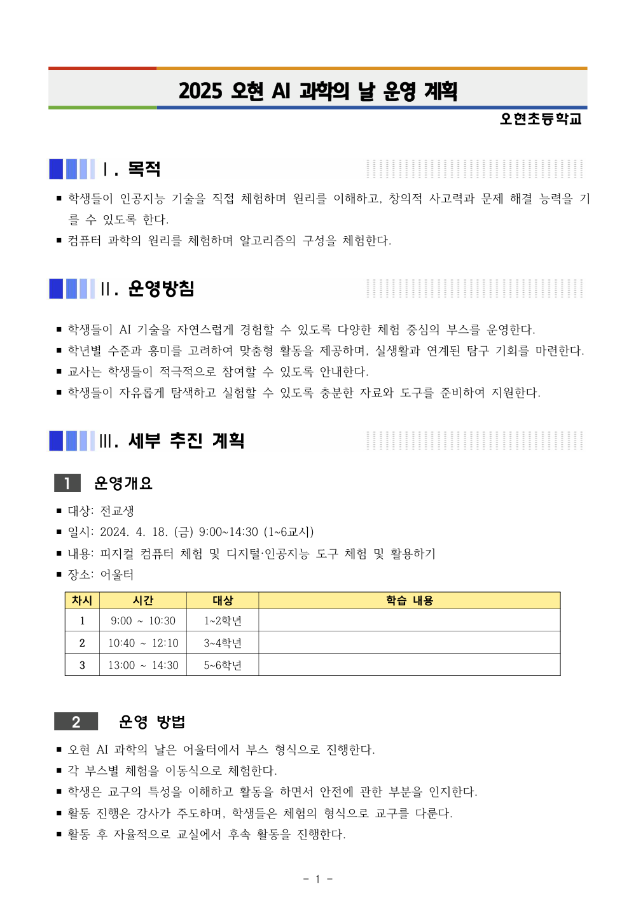
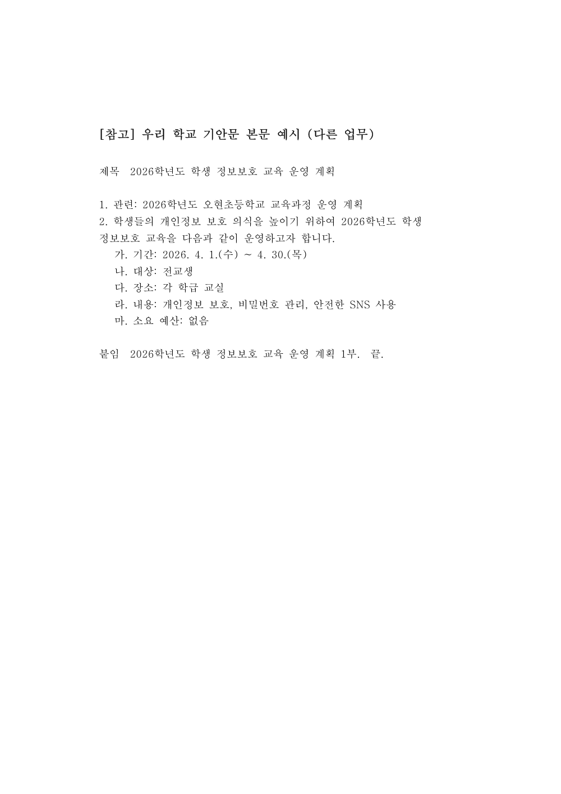
📋 복사해서 쓰기
프롬프트 저장소 · 6개
프롬프트는 여기서 [복사] → inline AI 입력창에 Ctrl+V → 보내기. 실습이 바뀌면 새 에이전트로 시작해요.
※ ★ 필수 하나만 하면 돼요. 아래 '더 해보기'는 시간 남을 때 골라서.
준비'2025학년도 오현 AI 과학의 날 운영계획.hwpx' 열기 + '기안문_본문_예시.hwpx' 첨부
더 해보기 (선택) · 5개 — 시간 남으면 펼치기
추가 실습: 실제 안전 업무 문서
준비'추가_2025학년도 합동소방훈련 계획(앞부분).hwpx' 열기 (실제 학교 계획서 앞부분) + '기안문_본문_예시.hwpx' 첨부
인터넷이 안 될 때만: 실습 자료의 00_프롬프트_전체.txt에 같은 내용이 있어요.
✅ 정답
정답 미리보기
AI 결과와 나란히 놓고 비교해 보세요. 정답 파일도 받을 수 있어요.
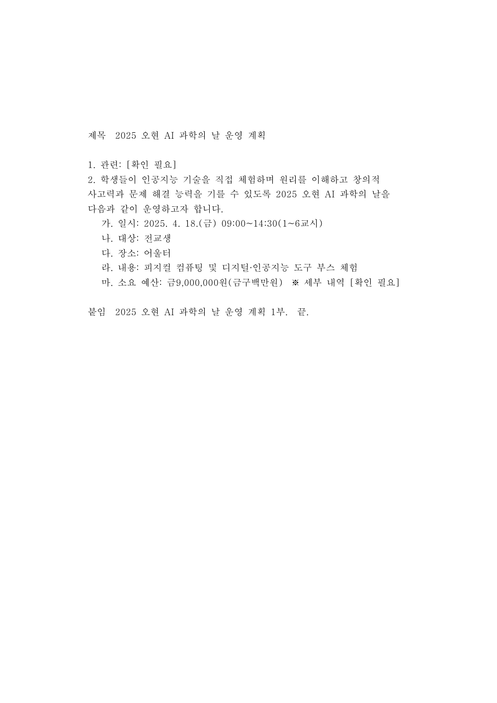
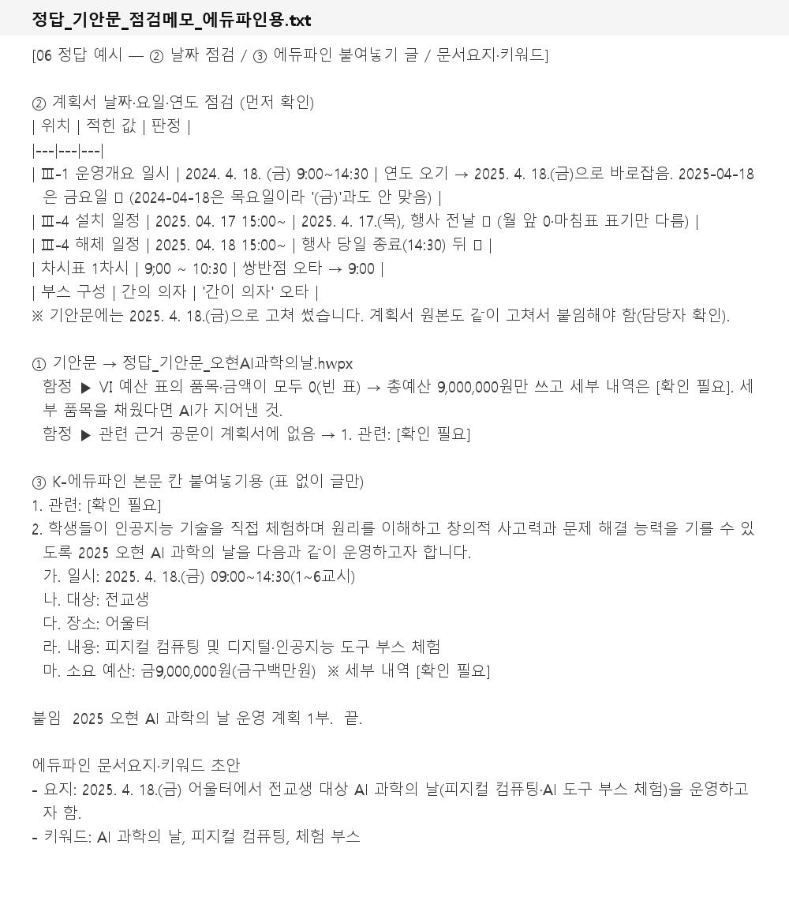
이런 곳을 봐요 — 함정
일시 2024. 4. 18. → 2025. 4. 18.(금). 2024년 4월 18일은 목요일이에요.
'9;00'(쌍반점), '간의 의자' → 지적하면 가산점
세부 예산은 비어 있어요. 총액 9,000,000원만 쓰고 세부는 지어내면 오답.
계획서 4번 제목의 '2024년도'를 기안문에 옮겨 쓰면 오답이에요.
이것만 기억해요
근거는 첨부한 자료만, 숫자는 엑셀로 계산.
계획서·메모·엑셀에 없는 내용은 [확인 필요].
참여율·만족도는 엑셀 숫자로 계산해서 넣어요.
숫자는 엑셀과 한 번 더 대조해요(더 해보기 ③).
이 순서로 해요
- 1
양식 열고 자료 셋 붙이기
결과보고서_양식.hwpx를 열고 계획서·메모·엑셀 3개를 한 번에 첨부해요.
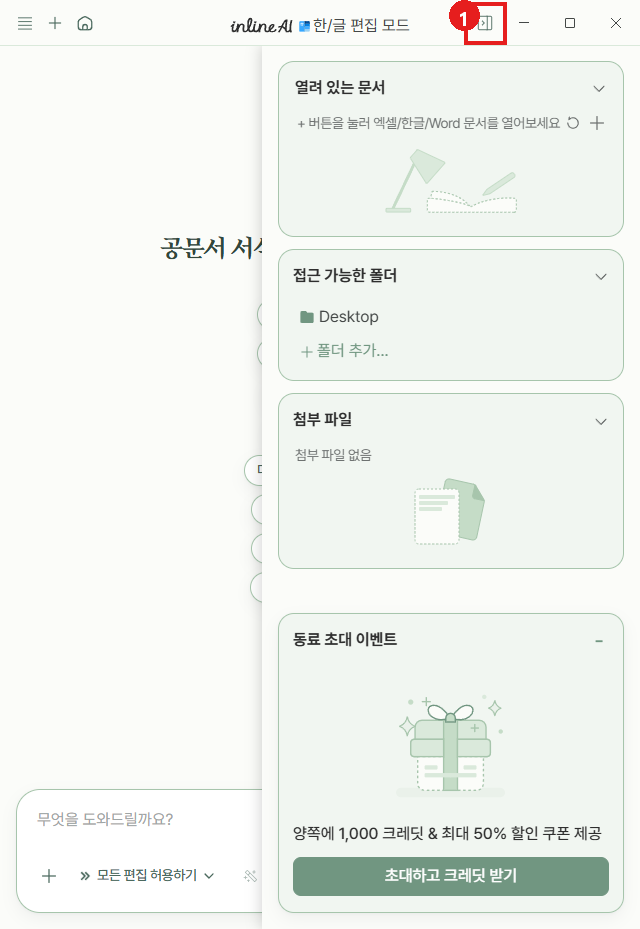
- 2
프롬프트 붙여 넣기
아래 프롬프트 저장소에서 ★ 필수 하나만 [복사] → 입력창에 Ctrl+V → 보내기.
- 3
결과 확인
양식 칸이 하나씩 채워져요. 평균 참여율 94.0%, 최저 5회 70%가 맞는지 봐요.
- 4
새 이름으로 저장
새 이름 보고서 파일이 생겼는지 확인해요.
📂 내려받기
실습 파일
한 파일씩 받아도 되고, 이 실습 폴더만 zip으로 받아도 돼요. 바탕화면 inlineAI_실습 폴더 안에 풀어 주세요.
실습 파일
결과보고서 양식
실습 파일
디지털동아리 운영계획
실습 파일
운영결과 메모
실습 파일
참여현황·만족도
추가 실습
추가 · 수상 안전 실적 서식
추가 실습
추가 · 수상 안전교육 계획
추가 실습
추가 · 수상안전 실시 메모
파일 미리보기
눌러서 크게 볼 수 있어요.
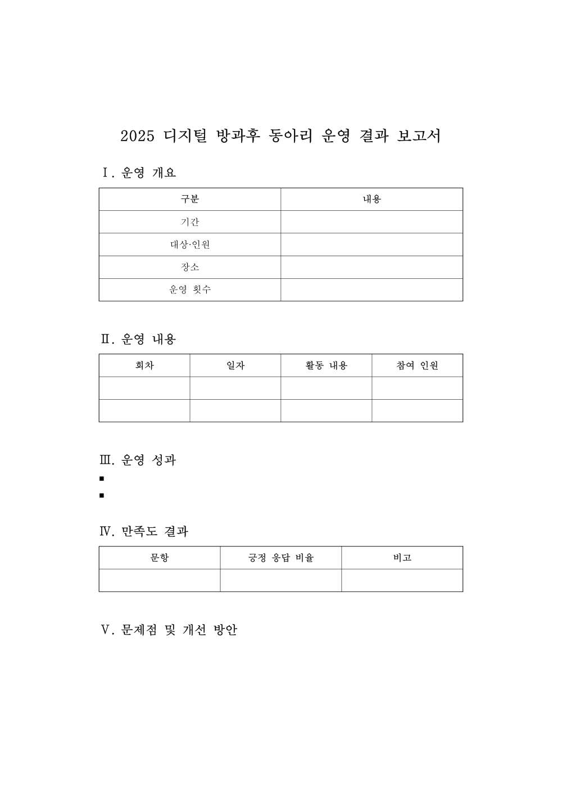
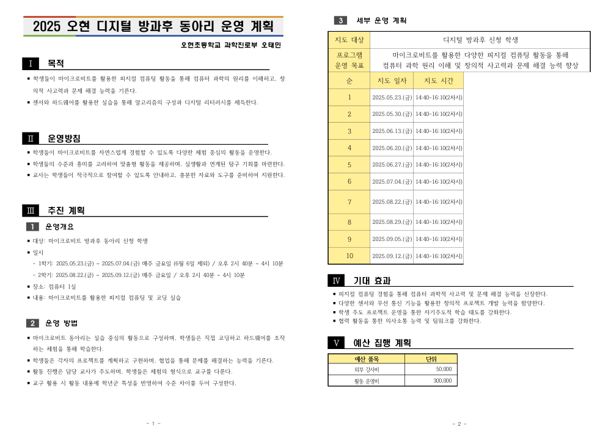
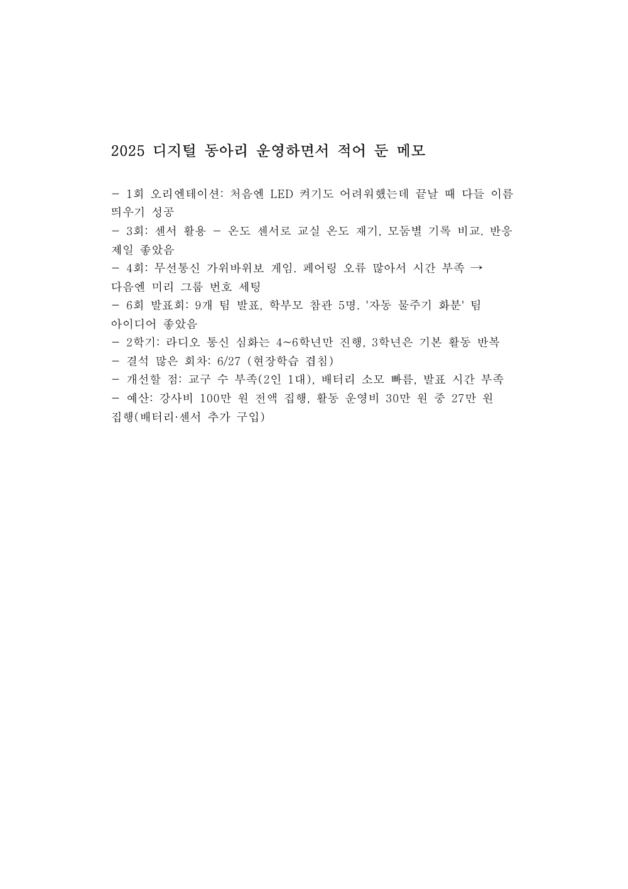
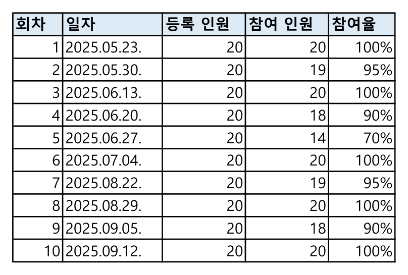
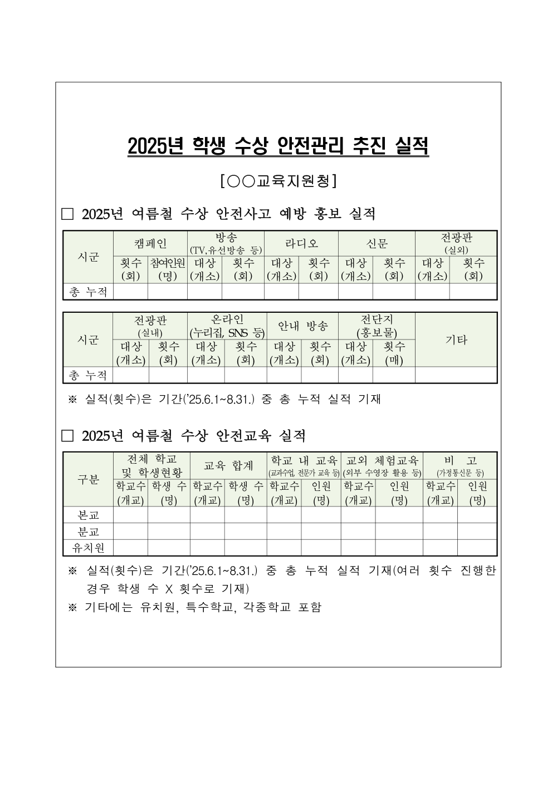
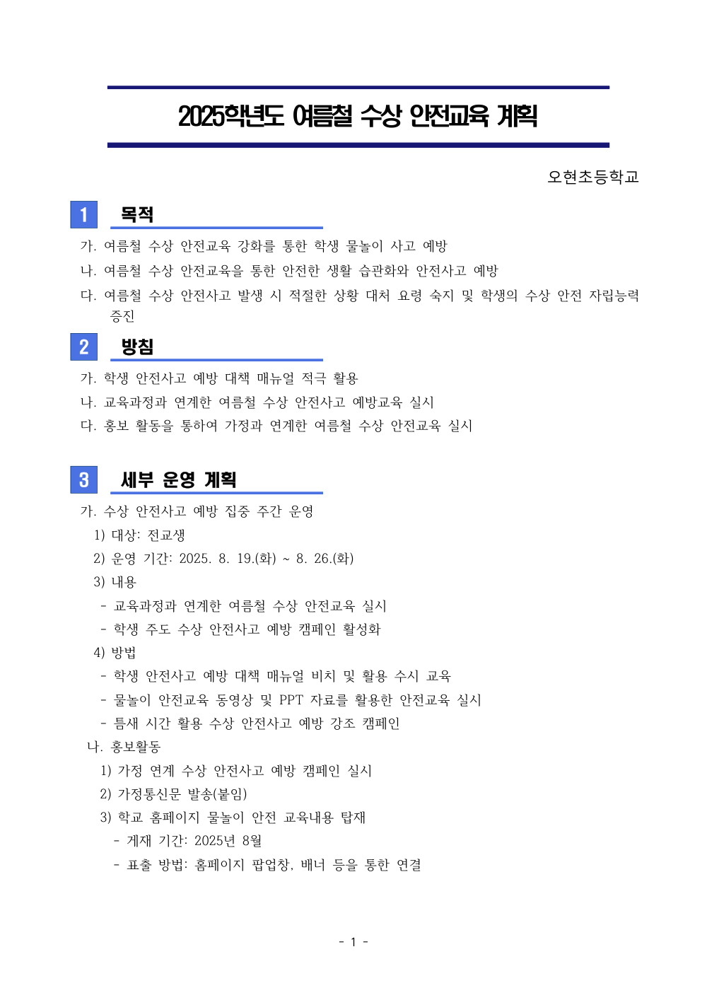
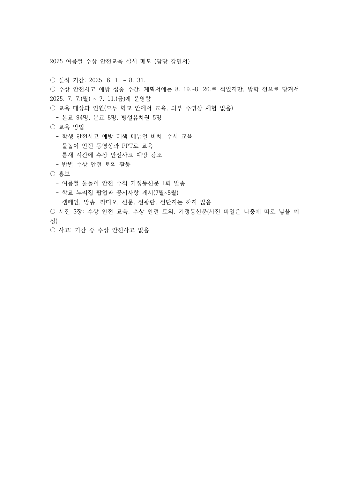
📋 복사해서 쓰기
프롬프트 저장소 · 6개
프롬프트는 여기서 [복사] → inline AI 입력창에 Ctrl+V → 보내기. 실습이 바뀌면 새 에이전트로 시작해요.
※ ★ 필수 하나만 하면 돼요. 아래 '더 해보기'는 시간 남을 때 골라서.
준비'결과보고서_양식.hwpx' 열기 + '디지털동아리_운영계획.hwpx', '운영결과_메모.hwpx', '참여현황_만족도.xlsx' 첨부
더 해보기 (선택) · 5개 — 시간 남으면 펼치기
추가 실습: 실제 안전 업무 문서
준비'추가_2025년 여름철 수상 안전관리 추진 실적(서식).hwpx' 열기 (교육청 실제 실적 서식, 칸은 비워 둠) + '추가_2025학년도 여름철 수상 안전교육 계획.hwpx', '추가_수상안전_실시메모.hwpx' 첨부
인터넷이 안 될 때만: 실습 자료의 00_프롬프트_전체.txt에 같은 내용이 있어요.
✅ 정답
정답 미리보기
AI 결과와 나란히 놓고 비교해 보세요. 정답 파일도 받을 수 있어요.
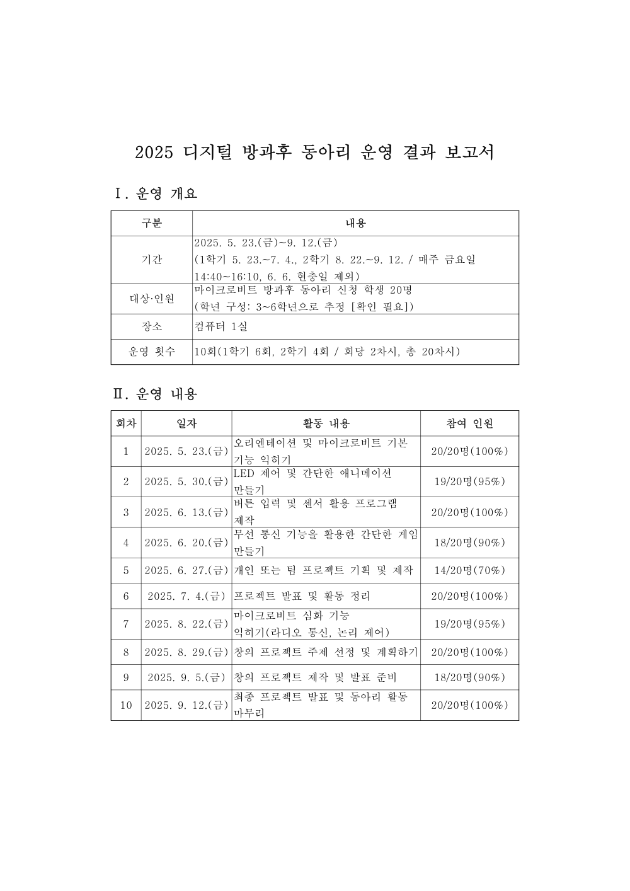
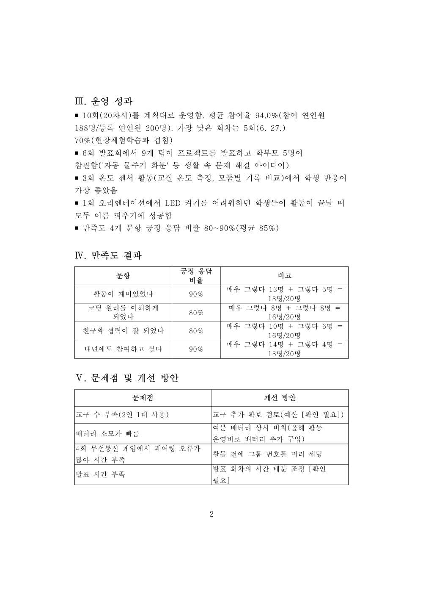
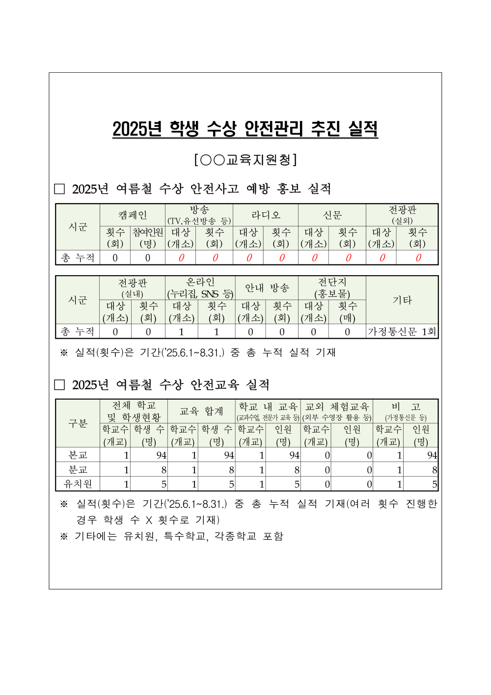
이런 곳을 봐요 — 함정
188/200 → 평균 94.0%, 최저 5회(6/27) 70%
긍정 비율 90 · 80 · 80 · 90%
집행 1,270,000원 / 계획 1,300,000원 → 집행률 97.7%
계획의 8. 19.~8. 26.이 아니라 실제 7. 7.(월)~7. 11.(금)을 써야 해요.
이것만 기억해요
양식을 주고, 숫자는 엑셀 그대로.
남색 제목 띠·맑은 고딕 양식을 열어 두고 시켜요.
그래프 숫자는 엑셀 값 그대로 넣게 해요.
가이드와 참고 PDF를 주면 같은 스타일로 만들어요.
이 순서로 해요
- 1
양식 열고 자료 붙이기
우리학교_PPT_양식.pptx를 열고 계획서·메모·엑셀을 첨부해요.
- 2
프롬프트 붙여 넣기
아래 프롬프트 저장소에서 ★ 필수 하나만 [복사] → 입력창에 Ctrl+V → 보내기.
- 3
결과 확인
PPT는 1~2분 걸려요. 기다리는 동안 아래 정답을 봐요. 남색 제목 띠 · 8장 이내인지 확인해요.
- 4
새 이름으로 저장
동아리_결과발표.pptx를 열어 막대그래프 5회가 70%인지 봐요.
📂 내려받기
실습 파일
한 파일씩 받아도 되고, 이 실습 폴더만 zip으로 받아도 돼요. 바탕화면 inlineAI_실습 폴더 안에 풀어 주세요.
실습 파일
우리학교 PPT 양식
실습 파일
디지털동아리 운영계획 (07과 같은 파일)
실습 파일
운영결과 메모 (07과 같은 파일)
실습 파일
참여현황·만족도 (07과 같은 파일)
실습 파일
스타일 참고 강의안 (발췌)
실습 파일
디자인 가이드 (강의안 스타일)
추가 실습
추가 · 디지털교육연구대회 요강 안내 공문
파일 미리보기
눌러서 크게 볼 수 있어요.

📋 복사해서 쓰기
프롬프트 저장소 · 9개
프롬프트는 여기서 [복사] → inline AI 입력창에 Ctrl+V → 보내기. 실습이 바뀌면 새 에이전트로 시작해요.
※ ★ 필수 하나만 하면 돼요. 아래 '더 해보기'는 시간 남을 때 골라서.
준비'우리학교_PPT_양식.pptx' 열기 + '디지털동아리_운영계획.hwpx', '운영결과_메모.hwpx', '참여현황_만족도.xlsx' 첨부
더 해보기 (선택) · 8개 — 시간 남으면 펼치기
추가 실습: 받은 공문으로 안내용 PPT 만들기 — 실제 경기도교육청 공문
준비홈에서 '새 에이전트' → '추가_(오현초등학교-5030 …) 제20회 디지털교육연구대회 요강 안내.pdf' 첨부 (열 필요 없음)
인터넷이 안 될 때만: 실습 자료의 00_프롬프트_전체.txt에 같은 내용이 있어요.
✅ 정답
정답 미리보기
AI 결과와 나란히 놓고 비교해 보세요. 정답 파일도 받을 수 있어요.
이런 곳을 봐요 — 함정
100 · 95 · 100 · 90 · 70 · 100 · 95 · 100 · 90 · 100 (%)
90 · 80 · 80 · 90%, 집행률 97.7%
Black Han Sans·Pretendard가 없으면 대체 글꼴을 알려 주는지 봐요.
운영기간(2026. 4.~2027. 1.)을 대회 기간으로 착각하면 오답. 응모 마감 5. 15.(금) 18:00.
상위 호환 — 오늘 습관이 그대로 통해요
일단 던지기 · 내 컴퓨터에 초대 · 양식 주기는 같고, 프로젝트·스킬·예약·커넥터가 더해져요.
폴더 정리 · 양식 맞추기 · 문서 쓰기를 같은 한 줄로
00_업무 지침를 스킬로 올리면 늘 같은 규칙으로
매주 월요일 아침 같은 때 알아서
솔직히: 한글 직접 편집은 inline AI가 더 편하고, 코워크는 유료(Pro 이상)예요.
비교
inline AI ↔ 클로드 코워크
| inline AI | 클로드 코워크 | ||
|---|---|---|---|
| 폴더 초대 | 접근 가능한 폴더 | 프로젝트 또는 폴더 → 폴더 추가 | 같음 |
| 고치기 전 확인 | 편집 전 확인하기 | 수동 승인 | 같음 |
| 늘 쓰는 규칙 | inline AI 지시사항 | Claude 지침 · 프로젝트 지침 · 스킬 | 같음 |
| 스킬 · 예약 · 커넥터 | — | 있음 | 코워크만 |
| 한글 직접 편집 | 한/글 편집하기 | hwp 출력 없음 [확인 필요] | inline AI |
| 요금 | 무료로 시작 | 유료(Pro 이상) | 요금 확인 |
▶ 영상
전정선 선생님 영상 — 교사를 위한 클로드
채널 교육티타임의 실시간 강의 다시보기예요. 눌러야 재생돼요. 대표 영상의 코워크 소개는 약 37:40, 폴더 지정·공문 정리는 약 53:50쯤이에요(추정).
대표 · 교사를 위한 최신 클로드 활용법 (2026. 7. 1.)
보조 · 클로드 코워크 실전 활용법 (2026. 7. 15.)
보조 · 교사 업무, 코워크로 어디까지? (2026. 10. 1.)
클로드 앱 준비
- 1
내려받기
claude.ai/download → Windows용 다운로드.
- 2
시작하기 · 로그인
시작하기 → Google 또는 이메일로 로그인. 코워크는 Pro 이상 계정이어야 해요.
- 3
Cowork · 폴더 추가
입력창에서 Cowork를 고르고 프로젝트 또는 폴더 → 폴더 추가로 inlineAI_실습을 골라요.

- 4
수동 승인
입력창 아래 수동 → 수동 승인. 하나씩 승인하고 넘어가요.

- 5
Claude 지침
내 이름 → 설정 → 계정 → Claude 지침에 짧은판을 붙여요.

- 6
코드 실행 켜기
설정 → 기능 → 클라우드 코드 실행 및 파일 생성을 켜요. 스킬에 필요해요.
🧩 스킬
업무 지침를 스킬로 올리기
00_업무지침의 클로드_스킬용 폴더(SKILL.md + references)를 zip으로 올려요. 아래 zip은 바로 올릴 수 있게 묶어 두었어요.


- 내 항목에
school-official-docs가 보이면 성공 - 설정 → 기능 → 코드 실행 및 파일 생성이 켜져 있어야 스킬이 돌아가요
- "작년 계획서 올해로 바꿔 줘"처럼 시키면 스킬이 저절로 쓰여요
- 마음에 드는 결과가 나오면 "스킬로 저장해 줘" 한 줄로 업무 매뉴얼이 남아요
오늘 한 일, 한 문장
일단 던지고, 내 폴더로 초대하고, 양식을 주세요.
'목록 먼저, 아직 고치지 마'
모르는 건 지어내지 말고 표시
원본은 두고 새 파일로 저장
학생 실명·연락처가 든 진짜 파일은 쓰지 않아요.
☀️ 아침 루틴
내일부터 아침 루틴
내가 다 쓰는 게 아니라, AI가 초안을 쓰고 나는 확인하고 다듬는 사람이 돼요.
출근해서 시켜 두기
오늘 할 문서를 먼저 AI에게 맡겨요.
수업 다녀오기
그동안 AI들이 동시에 일해요.
결과 보고 다듬기
쉬는 시간에 열어 보고 "여기는 이렇게"만 말해요.
여러 AI에게 동시에
새 에이전트를 여러 개 열어 각각 다른 일을 맡겨요.
가정통신문 — 02 양식으로
그 행사 기안문 — 06 예시로
견적서로 품의 산출 내역
단원 PDF로 수업 퀴즈 10문항, 정답은 따로
주의: 한글 문서는 에이전트마다 다른 파일로(같은 파일을 둘이 고치면 엉켜요). 크레딧은 맡긴 만큼 쓰여요.
▶ 쇼츠
빠른 AI가 좋은 AI일까요?
사람처럼 화면을 보고 마우스를 움직이는 AI예요. 빠르진 않죠? 대신 처음부터 끝까지 스스로 해요.
요즘 AI는 오래 걸려도 검토할 게 적은 쪽으로 가요. 기다리지 말고, 시켜 두고 다른 일을 하세요.
사람처럼 컴퓨터를 쓰는 AI (쇼츠)
오늘 가져가는 것
04 학교기본정보만 고치면 내일부터
이 페이지에서 복사해서 그대로
결과와 나란히 놓고 비교